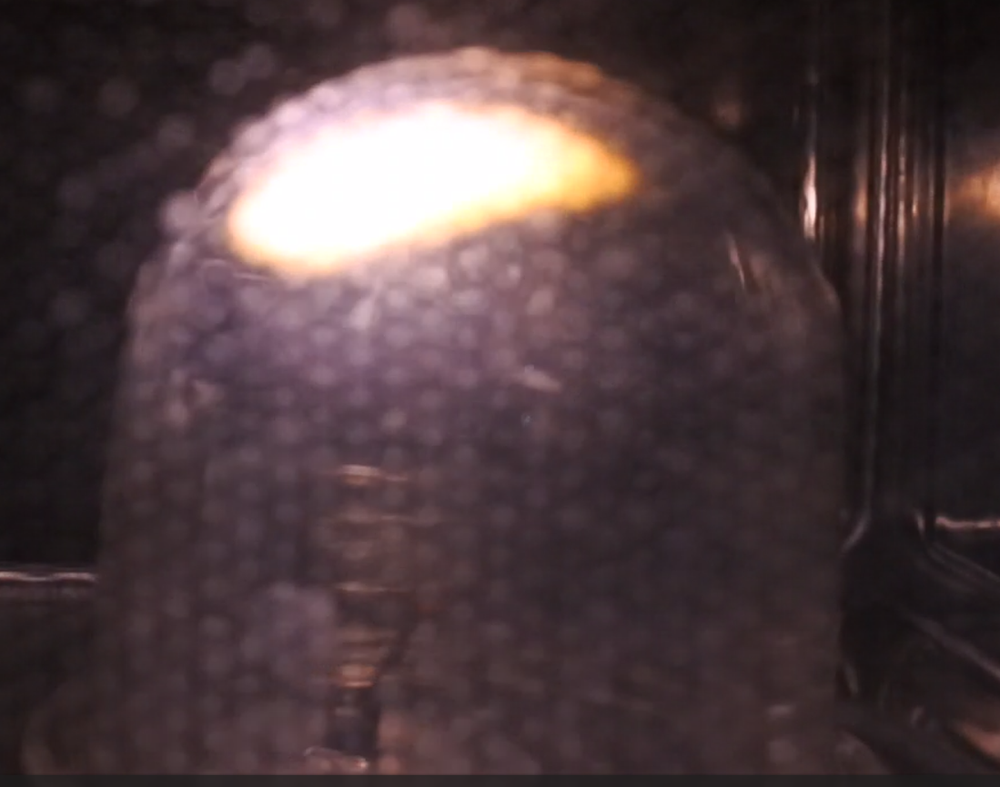

When a graphite rod is placed in a microwave oven, one can observe a plasma formation at the tip. We investigated the phenomenon: its duration and influencing parameters such as the geometry and material of the rod, the volume of the containment bowl and so on. We tried to answer the following question: can we get an infinite plasma lamp without burning the graphite lead?
Our first ingredient was, of course, a microwave oven. Ours was a proline CB23SS with a rated power output of 800W for a standard microwave frequency of 2.45GHz.
To understand how a microwave works, one has to understand its magnetron. A magnetron can be described as two cylinders, the cathode inside of the anode, separated by a vacuum. Once place in an electric field, electrons will be torn from the cathode and attracted by the anode. If a magnetic field is present, the electrons will be deviated. Above a critical value -- given by Hull's equation – for the magnetic field is reached, the electrons will rotate in a stable orbital trajectory around the cathode, emitting an electromagnetic wave thanks to the cyclotron effect.
This wave will then go along the magnetron antenna, though the waveguide and inside the cooking chambre where it will be reflected on the metallic walls, resulting in standing waves.
The second ingredient is graphite leads. Those are made of a mix of clay, wax and graphite. The percentage of each components determines the type or hardness of the lead. To get an idea of their characteristics, we measured their electrical and thermal conductivity for different percentages of graphite. Whilst the thermal conductivity remained more or less constant, the electrical conductivity increased with the percentage of graphite.
Finally, we set up the experiment in the following fashion: we stuck a 3cm (1/4 of the wavelength) graphite rod tilted at an variable angle (alpha) on an aluminium antenna (diameter of 6.1cm which is a half of the wavelength) and place all of it under a confinement bowl made of glass and into the cooking chambre.
Now for the theory. We modelized the plasma by going from the antenna to a gun. Indeed, we can see the wave emitted by the magnetron as being absorbed by the half-wave aluminium dipole support. From antenna theory, we were able to get the following information on the current and tension within the support that we modelized as an electric circuit:
But that's not all! The rod length being a fourth of lambda, we can add to this circuit and get the following:
In the end, we have a strong tension differential between the base and tip of the rod as well as an important electric field thanks to how we sharpened the lead (lightning rod effect). Adding to that the current, we end up with a rise in temperature leading to thermos-ionic emissions. Electrons are torn from the lead and will hit the air molecules, ionizing them and creating a plasma. We went from an antenna to an electron gun.
We then checked whether that scenario was credible by solving the heat equation in the lead for a continuous current. We determined that for tens of watts for the power, millimetres for the diameter, we would obtain thousands of kelvins for the temperature. We then checked by measuring the spectrum of a lead subjected to a continuous current in a vacuum. We did it for different types of lead and used Planck's law to determine the different values. We always obtained the right order of magnitude.
However, this experiment does not exactly describe what goes on in our microwave. Indeed, its frequency being so high, we have to take into account the skin effect. The current will only propagated withing a certain depth called the skin depth that we calculated and found to be 36 micrometres.
All of that being in place, we went on to experiment. The first thing we did was to check whether we indeed had standing waves. To do so, we put grated cheese on a cardboard slab and put it in the microwave. We observed cold and hot spots where the cheese melted and, by measuring the distance between two such spots, we found half the wavelength as expected. We indeed have standing waves.
We then wondered whether those spots would influence the plasma. To check that, we tested our setup with and without rotation, which showed us that depending on the location, the intensity of the plasma would range from very strong to completely absent. We also noticed that spots resulting in an intense plasma seemed to correspond to hot spots. To verify that, we mapped the inside of the microwave depending on the intensity for given sets of parameters.
We then investigated the shape of the confinement chambre. Circumstances led us to select a cylinder with a rounded bottom.
We then tested different angles for the lead and observed that we obtained better plasma balls for a tilt between 15 and 45 degrees.
We also checked the influence of the lead's hardness and found that the brightness of the plasma increased with the percentage of graphite.
Finally, by checking the videos we filmed and slowing them, we noticed that the plasma around the rod went from a reddish orange to white before emitting a plasma ball. The one around the rod would then disappear, leaving only the ball stuck at the top of the bowl.

We then did a spectral analysis of the plasma and compared it to NIST database in order to determine what it was made of.
We identified rays corresponding to carbon and oxygen. It is important to note that nitrogen rays can also be seen, as well as what might be sodium, but we did not want to overload our figure.
To conclude, we compared the efficiency obtained for our theory to that of a simple experiment consisting of putting a glass of water in a microwave and measuring the temperature before and after. Those efficiencies were close, reinforcing our trust in our theory.
But one question remains. Could we obtain a infinite plasma lamp? This would require getting a plasma ball stuck at the top of the bowl and a lead going off after emitting it, all of it staying as such whilst the microwave is running.
The answer is, yes, we could. By optimising the parameters, we managed to get a plasma lamp that could theoretically be infinite. The only constraint is the confinement bowl that breaks or melt because of the heat.